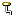

| Step 1: |
Import the example project into CCS (Do not rename) |
|
Click on the link above to import the project. The imported project is available in the Project Explorer view,
expand the project node to browse the imported source files. To modify source code, double clicks on the source file within the
project to open the source file editor. |
|
| Step 2: |
Launch The Descriptor Tool |
|
Design your USB device in the Descriptor tool and then generate Descriptor Tool files into the project |
|
| Step 3: |
Rename the project (if needed) |
|
Now that the project is imported and the USB descriptor made, you can rename the project |
|
| Step 4: |
 Build the imported project Build the imported project |
|
To change build options, right click on the project and select Properties from the context menu. To build the project,
select the link above, or select the Build toolbar button, or select the Project | Build Project menu item. |
|
| Step 5: |
Debugger Configuration |
|
Click on the link above to change the device connection. Additionally, this option is also available in the project properties.
|
|
| Step 6: |
 Debug the imported project Debug the imported project |
|
|
Click on the link above to launch a debug session for the emptyUsbProject project and switch to the CCS Debug Perspective.
Additionally, these are other methods to start a project debug session. Select the project in the Project Explorer view and click on the bug toolbar button.
To relaunch a previous debug session, click on the small arrow beside the bug toolbar button and select one of the debug session from the history. |
|